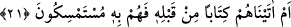
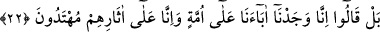

konuşmuştur. İşte bu durum, tahmincinin tahminindeki işi gibidir. Velev ki bu söz,
verilen habere mutabık olsa da bu tarz söz söyleyenler yalancıdır. Nitekim Münâfikûn
sûresinde Allah Teâlâ’nın münâfıkların sözünden hikâye tarikiyle: “Münâfıklar sana
geldikleri zaman «senin muhakkak Allah’ın elçisi olduğuna şâhidlik ederiz»
derler. Senin muhakkak kendisinin elçisi olduğunu Allah bilir ve Allah
münâfıkların yalancı olduklarına şâhidlik eder.” (el-Münâfikûn, 63/1)
Fakir (Bursevî) der ki: Şâyet mü’minden meydana gelirse dileme işini Allah’a isnâd
etmek îman ve tevhîddir. Müminden meydana gelmezse küfür ve şirktir. Çünkü bu durum
bir inad, bağnazlık ve câhilliktir. İşin aslını bilmemekten kaynaklanmaktadır.
Dolayısıyla bu isnâdın hiçbir önemi yoktur.
Devam eden âyette, bu hususta müşriklerin naklî bir kaynaklarının oluşunun iptali
cihetine gidilerek şöyle buyrulmaktadır:
21. Yoksa bundan önce onlara bir kitap verdik de ona mı tutunuyorlar?
“Yoksa bundan” Kur’an’dan yahut peygamberden yahut onların bu iddiâlarından
“önce onlara” Allah’tan başkalarına ibâdet etmelerinin ve meleklerin Allah’ın kızları
olduğunun doğruluğunu beyân eden “bir kitap verdik de ona mı tutunuyorlar?” Bu
kitaba mı dayanıp güveniyorlar. Halbuki onlara bir kitap vermediğimiz bellidir. Sonra
onlarda aklî ya da naklî bir huccet (delil) de yoktur.
Bir şeye sımsıkı sarılmaya “
/istemseke bih” denir. Tâcu’l-masâdir de
şöyledir: İstimsâk, bir şeye el vurmak demektir. Bu fiil “bâ” ile müteaddî olur.
Müfredat’ta şöyle denilmiştir: Bir şeyi “imsâk etmek” ona asılıp sarılmak ve onu
korumaktır. “İstimsâk” ise imsâk durumunu araştırmak demektir.
22. Hayır! «Sadece, biz babalarımızı bir din üzerinde bulduk, biz de onların izinde
gidiyoruz» derler.
“Sadece, biz babalarımızı bir dîn” ve uyulan bir yol “üzerinde bulduk.” Bu
tutumlarına aklî ve naklî hiçbir delil gösteremeyip bilakis kendileri gibi câhil ve
bilgisiz olan babalarını taklit etmekten başka bir dayanakları olmadığını itiraf ederek
“biz de onların izlerinde gidiyoruz” dediler.
Âyet-i kerîmede “ümmet” kelimesi, din ve kasdedilen yol mânâsında kullanılmıştır.
Râgıb şöyle demiştir: Ümmet, tek bir din yahut aynı zaman ve mekânda ittifak etmiş